1.Capt.America's Shield
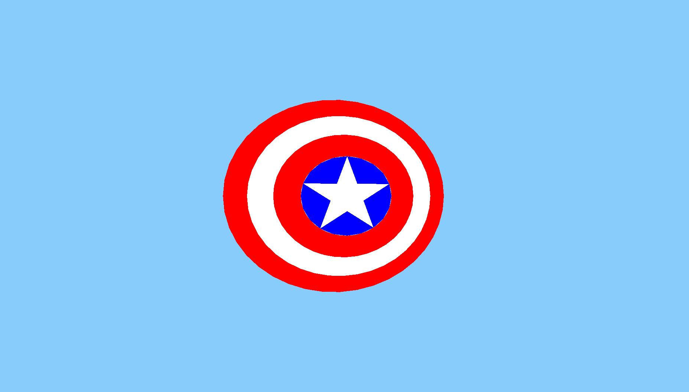 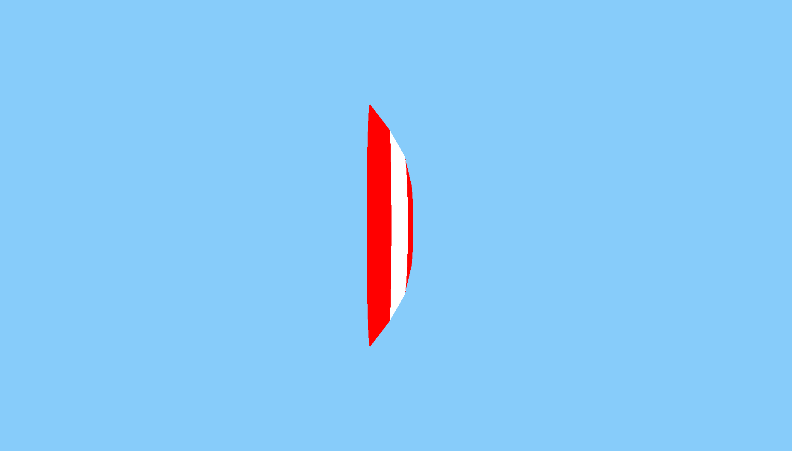
2.Thor's Hammer
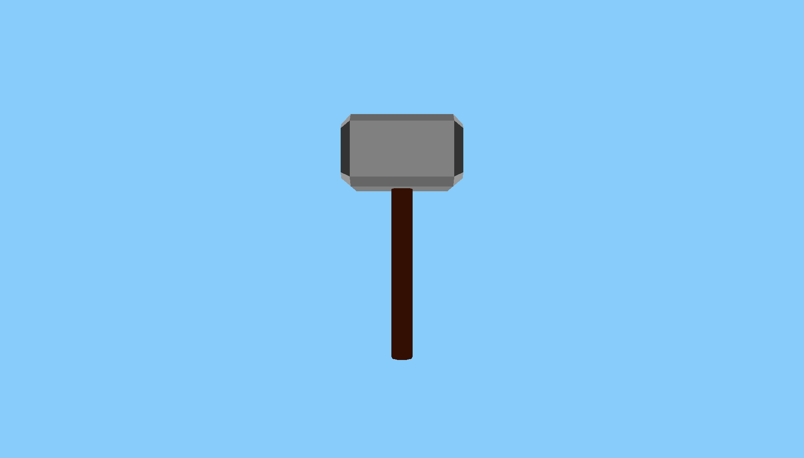 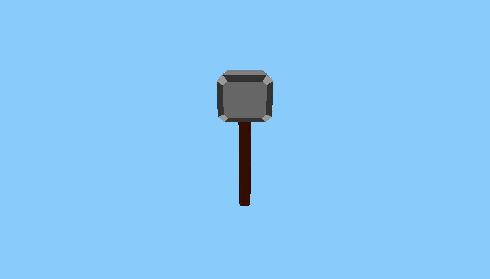
3.Arrow
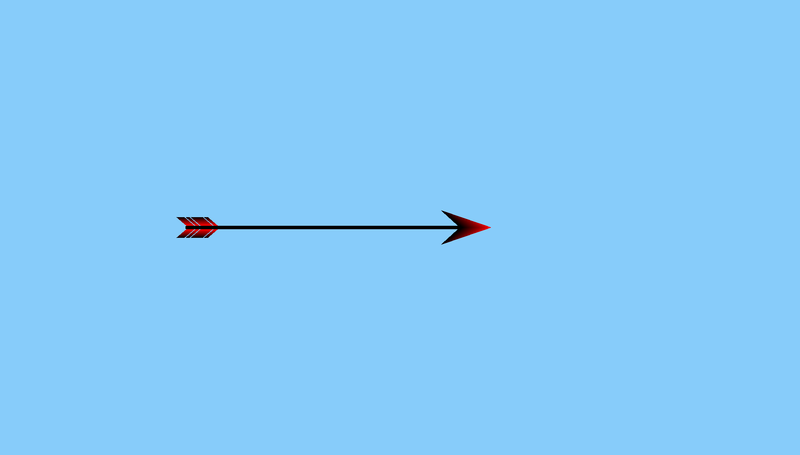 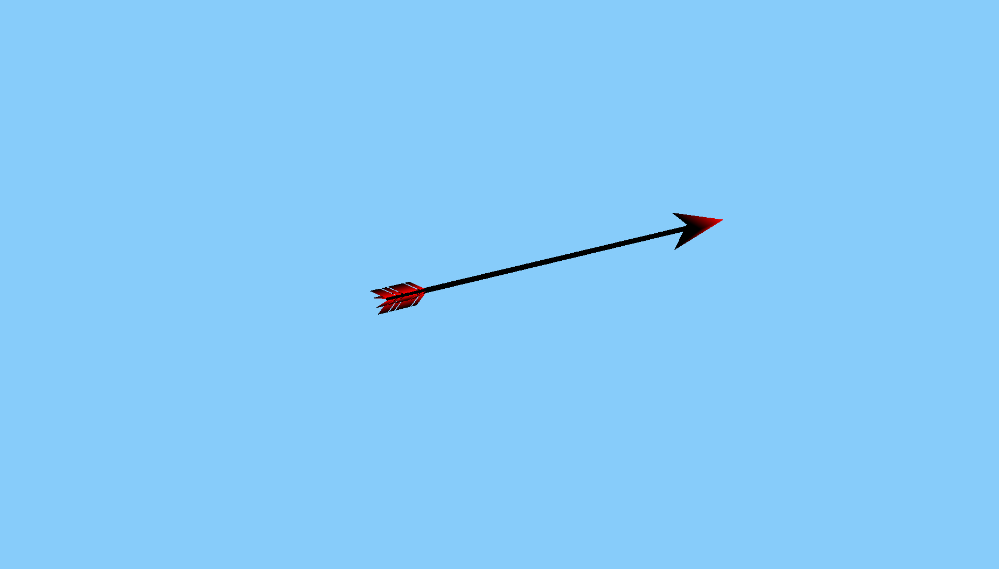
Modelling mode shows the loaded file as an orthographic projection. In the modelling mode, the features are:
a) On the left click of the mouse, a point is made,though we cant see the point but if we click three times on the window we will get a prompt to enter the RGB value we want for the triangle, after entering that we can see a triangle having the same vertices.This can be extended to making any number of polygons by specifying appropriate coordinates by clicking at the right place. The default value of z coordinate is zero. It can be incremented/decremented in steps of 0.5 using keypad + and - keys.

b) Also now if you hold down shift and press the left click of the mouse, the last added point gets removed.Since we cant see the point being added one after another, we can confirm this by making a triangle and then holding down shift and pressing left click, we will see that the triangle gets removed since we are left with only two points which are not sufficient for a triangle.But now if click again anywhere then a new triangle will be formed with the new coordinates.This can be extended to a multiple triangles and hence making polygons.
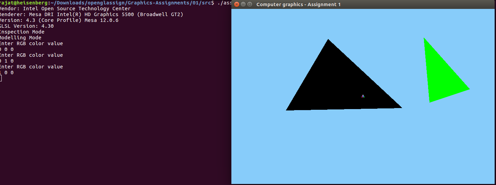
Inspection mode shows the loaded file as an perspective projection. In the inspection mode, the features are: a)The left and right arrow keys rotates the model about the Y axis,up and down arrow keys rotates the model about the x axis, PgUp/PgDn about the Z axis.The pivot for all these models is the centroid of the model.Also if we translate the model to some new location then pressing the R key moves it back to the orginal location.
b)W,S,A,D,Z,X key translates the model along +ve and -ve Y,X and Z axis respectively.
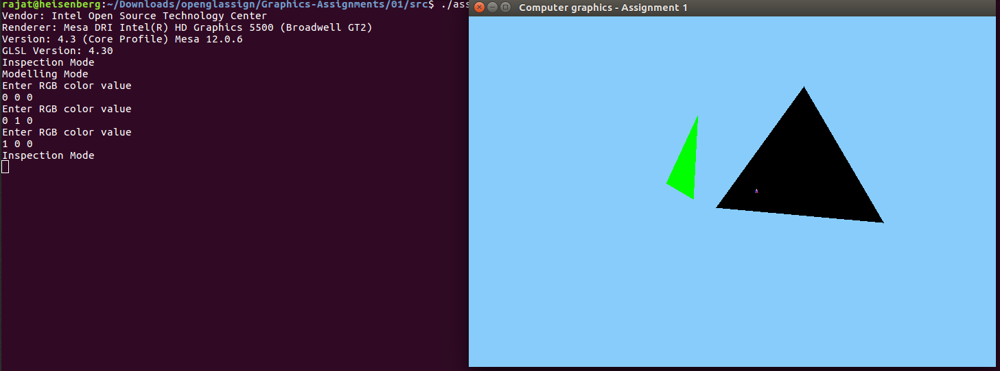 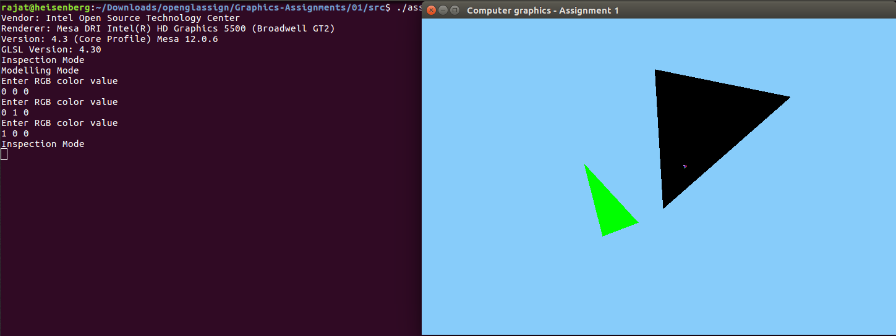
Common features: a)We are storing the vertices of the triangles being used for making the models in the raw files, their pattern being x,y,z,r,g,b values rgb specifying the color of the vertex. b)Also we can load any raw file by pressing L prompting the filename which we need to enter and we will see the model corresponding to the vertices in that raw file. c)We can also save the coordinates of the vertices of any model to any new file by pressing K and entering the filename.
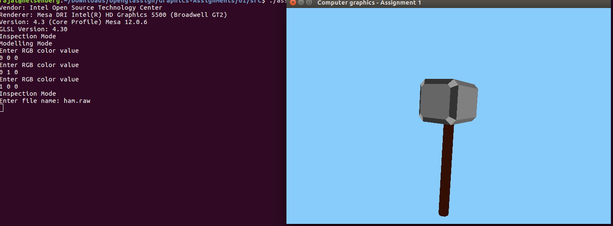 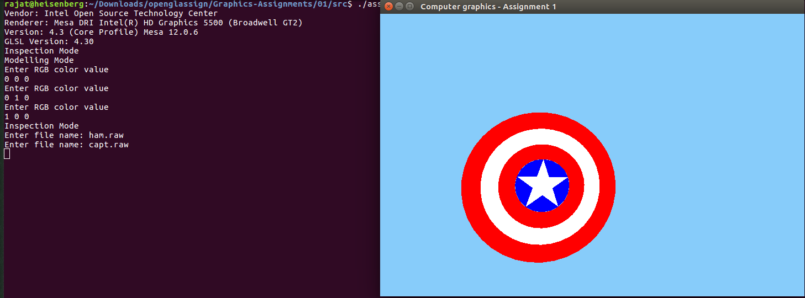